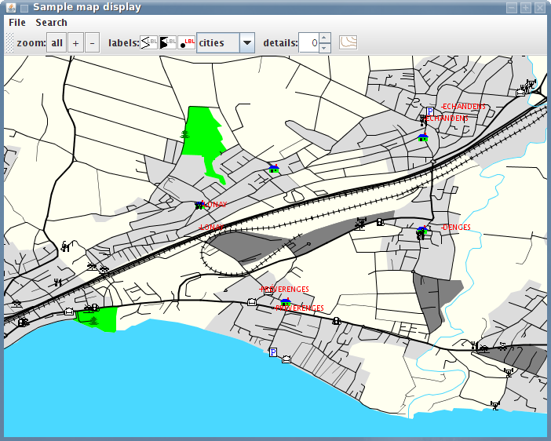
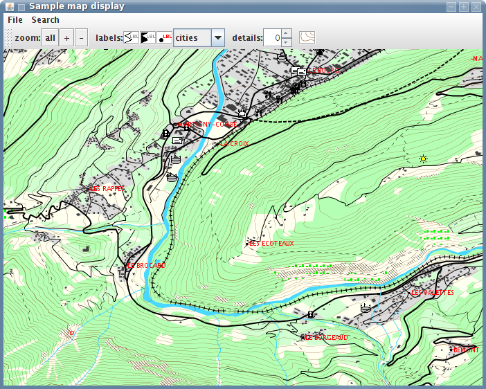
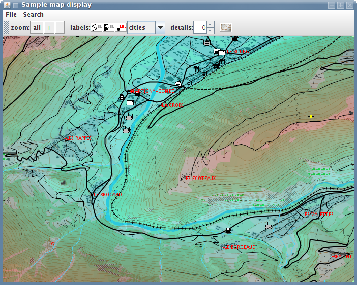
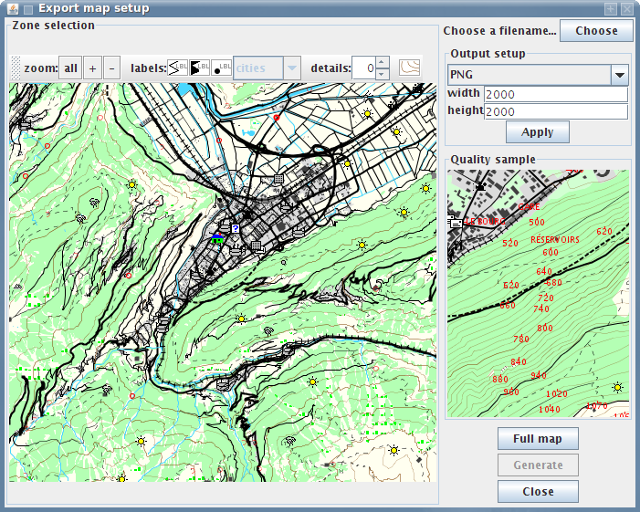

Screenshots
Click on the images to view the full size.

Not too far from where I live, using City Navigator V9.

An example using Swiss Topo maps.

Same map, but with some relief enhancement enabled.

The export dialog.